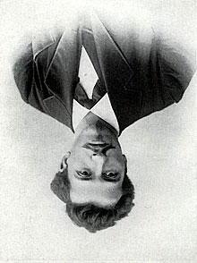
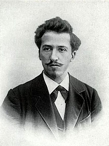
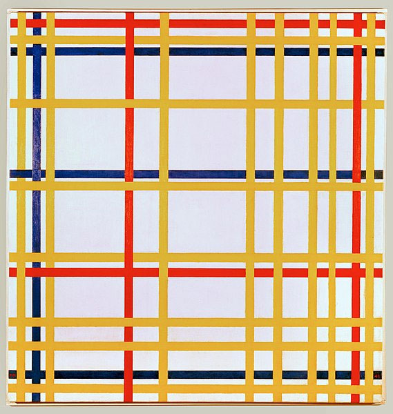
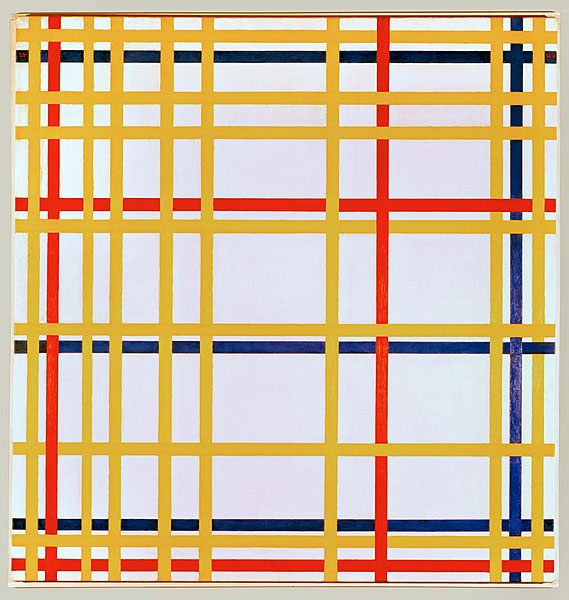
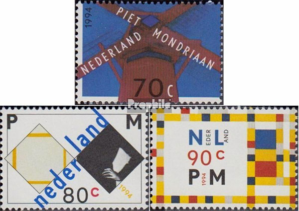
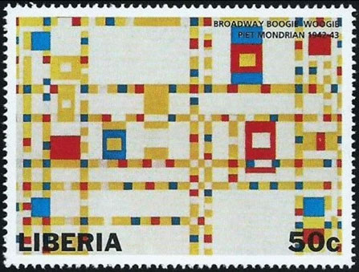

THE UPSIDE-DOWN PAINTING BY MONDRIAN
(from the Cycle: Modern Destroyers of Art)
Victor Manta
Pieter Cornelis Mondriaan (Dutch …, after 1906 Piet Mondrian…, 7 March 1872 – 1 February 1944), was a Dutch painter and art theoretician who is regarded as one of the greatest artists of the 20th century. He is known for being one of the pioneers of 20th-century abstract art, as he changed his artistic direction from figurative painting to an increasingly abstract style, until he reached a point where his artistic vocabulary was reduced to simple geometric elements.


Mondrian's work had an enormous influence on 20th century art, influencing not only the course of abstract painting and numerous major styles and art movements (e.g. Color Field painting, Abstract Expressionism and Minimalism), but also fields outside the domain of painting, such as design, architecture and fashion. Mondrian has been described by critic Robert Hughes, in his 1980 book The Shock of the New , as "one of the supreme artists of the 20th century."
Source Wikipedia: https://en.wikipedia.org/wiki/Piet_Mondrian
Let us take a look at one of the masterpieces of this unique genius of the 20 th century and learn what is the press relating about it.

(The original painting)
Mondrian artwork displayed upside down for 75 years
Early photo of ‘New York City 1' shows piece with its closely tied yellow, blue, and black stripes at the top, not bottom; will remain wrongly displayed so as not to damage it
“New York City 1,” created in 1941, is a grid-like mix of blue, yellow, red, and black adhesive tapes.
The work does not bear Mondrian's signature, likely because he had not considered the piece finished.
The piece has been hanging in the Mondrian exhibition at Germany's Kunstsammlung Nordrhein-Westfalen K20 museum in Dusseldorf since 1980.
Source “Time of Israel”: https://www.timesofisrael.com/mondrian-artwork-displayed-upside-down-for-75-years/

Mondrian's painting upside-down, as exhibited
Mondrian painting has been hanging upside down for 75 years
Despite the discovery, the work, titled New York City I, will continue to be displayed the wrong way up to avoid damaging it
A painting by abstract Dutch artist Piet Mondrian has been hanging upside down in various museums since it was first put on display 75 years ago, an art historian has found, but warned it could disintegrate if it was hung the right side up now.
Indicators suggesting an incorrect hanging are multifold. The similarly named and same-sized oil painting, New York City, which is on display in Paris at the Centre Pompidou, has the thickening of lines at the top.
“Was it a mistake when someone removed the work from its box? Was someone being sloppy when the work was in transit?”, the curator said. “It's impossible to say.”
Source “The Guardian”: https://www.theguardian.com/artanddesign/2022/oct/28/mondrian-painting-has-been-hanging-upside-down-for-75-years
I present on this page a few stamps dedicated to the renowned artist and his masterpiece “New York City”, 1942, Paris, at Centre Pompidou, as well as in normal position as upside down. This work is very similar to the one described in the two articles. It was painted when the artist was 70 years old, therefore in full artistic maturity. In my opinion, not a big difference between both images, which shows the flexibility and versality of his art!
Above I also show, just for fun, what happens if I turn Mondrian's portrait shown in Wikipedia and painted by Anonymous, upside down. How inflexible, how backward, how sloppy does it look, isn't it?
Some Mondrian's paintings shown on stamps:

